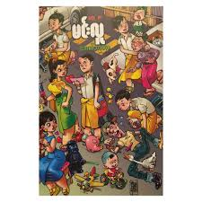
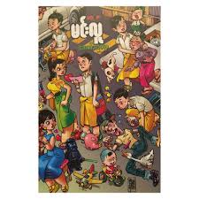

- Pankyung (first novel) - 1977
- Love, Hey, Enter the Sky (poem book) - 1978
- Sadhu In Sans (a book published jointly with his father U Sadhu and his brothers Maung Wunna and Thu Maung) - 1978
- Dear Flowers - 1979
- Published poetry books in collaboration with fellow poets - 1979
- No Hate - 1980
- May love last a century - 1981
- Little Bird....-1981
- Two halves - 1982
- Thanyaozin Group -1983
- Sister-in-law -1983
- Let's Miss You -1984
- We are - 1985
- Love and Romance Adventure - 1985
- He and I - 1986
- You're Not Bad - 1986
- They are happy - 1986
- Seven Years of Sorrow - 1986
- Let me ask you, do you love me? Do you like me? Whisper softly - 1987
- Three Sisters - 1987
- Funny and boring - 1987
- Winter in My Heart - 1988
- The Thrillers - 1988
- Far Away - 1989
- I can't do anything - 1990
- About a Friend - 1990
- Crazy Love - 1994
- Steel Dust and Fresh Novels (Collection) - 1994
- Crossing the Road Short Stories - 1995
- The Past Heart (Magazine Novels) - 1995
- The Power of Hate Novels - 1996
- No Hate - 1996
- Thanyaozin Group - 1996
- Crying and Laughing - 1996
- Short Stories of Love - 1996
- From a Little Experience to an Old Experience - 1996
- Dear Lover, Let Me Love You - 1996
- Breathing and Laughter - 1997
- U Min Lu Kaung Kum (poem book) - 1997
- The lizard that believes everything you say - 1999
- The Drug Dealer - 1999
- Laughter Elite - 1999
- Portrait of the Golden Lady (co-authored) - 1999
- Love troubles
- Tell Me What You Call Love and Like, My Little Sister and Other Short Stories (Authors) 1999
- Other short stories - 2000
- Water - 2000
- Anonymous Love - 2000
- You're not bad - 2000
- U Min Lu Kaung - 2000
- Literary Advertisement Stage Show Festival and Other Short Stories - 2001
- Literary Auction - 2001
- Essay lover - 2001
- Monkey Hand - February 2011
- Kankoni - 2002
- Natural Comedy - 2002
- Classic Dream - 2002
- Short story beginning-end - 2002
- With roses in her hair - 2002
- The Young Man - 2003
- Bell-tossing Short Stories - 2003
- The Untouchables - 2003
- Love and Football - 2004
- The corners of the lips - 2004
- The beginning of love, the end of love - 2004
- Novel - 2005
- Ao Cuong - 2005
- Handwritten letter - 2005
- Literature Kerry Kay Char - 2006
- It should not be interpreted as love - 2006
- Fragments of Laughter - 2007
- New Year - 2007
- Heart 380/54 - 2007
- Sneak peek - 2009
- Aung Ba Lay - 2010
- Monkey Hands - 2011
- Recalled Witness - 2011
- Collection of short stories by Minlu (1976-2005) - 2012
- Spring leaves
- Rose from the rain
- Heart of gold
- Citizens of Love
- Laughter left -
Min Lu Solo Magazine - December 2013 (This book was published after Sayar Min Lu passed away.)
In the book "Min Lu's Collection of Short Stories (1976-2005)" by Sir Min Lu.
My favourite Books

.jfif) 

.jfif)
Audio Books